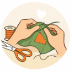
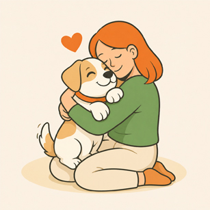
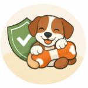
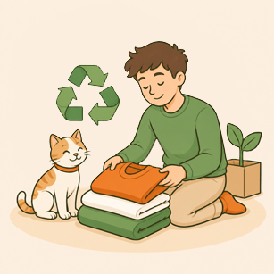
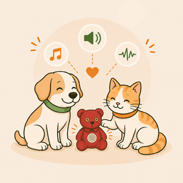

Lo que ofrecemos en
TextiHuella Pet

Personalización total
Cada producto es único, creado con tu propia prenda y pensado especialmente para tu mascota.

Conexión emocional
Incorporamos valor sentimental para fortalecer el vínculo entre tú y tu mascota.

Seguridad para mascotas
Diseñamos productos con materiales seguros y costuras resistentes para mayor durabilidad.

Enfoque sostenible
Reutilizamos textiles para reducir residuos y transformar prendas en nuevas experiencias.

Innovación funcional
Integramos audio personalizado y diseño práctico para ofrecer una experiencia única, emocional y funcional para tu mascota.